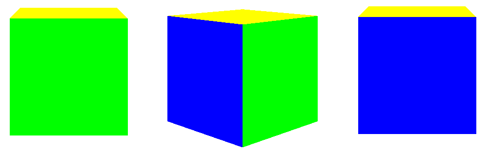

A quaternion is a 4 dimensional complex-like number, it has four components, three of which are the "imaginary" part.
$$ \textrm{q} = a+b\textrm{i}+c\textrm{j}+d\textrm{k} $$
$$ \textrm{i}^{2}=\textrm{j}^{2}=\textrm{k}^{2}=\textrm{i}\textrm{j}\textrm{k}=-1 $$
We represent a quaternion with this data structure:
typedef union{
float q[4];
struct{
float x;
float y;
float z;
float w;
};
} Quaternion;
The four components are usually ordered \(w,x,y,z\) but I like to put \(w\) at the end.
Initializing a quaternion:
Quaternion q = (Quaternion){1, 2, 3, 4};
A quaternion is basically a 4 dimensional vector, so it has a magnitude (or norm, or length):
$$||q|| = \sqrt{x^{2}+y^{2}+z^{2}+w^{2}}$$
float quat_magnitude(Quaternion q){
return sqrt(q.x*q.x + q.y*q.y + q.z*q.z + q.w*q.w);
}
It can be normalized by dividing each component by the magnitude:
Quaternion quat_normalize(Quaternion q){
float m = quat_magnitude(q);
return (Quaternion){
q.x/m,
q.y/m,
q.z/m,
q.w/m
};
}
A special property of quaternions is that a unit quaternion (a quaternion with magnitude 1) represents a rotation in 3D space.
There is a special quaternion called the identity quaternion which corresponds to no rotation:
Quaternion quat_id(){
return (Quaternion){0, 0, 0, 1};
}
Multiplying two unit quaternions represents a composition of two rotations.
Quaternion multiplication looks like this:
$$ \textrm{q}_{1}.\textrm{q}_{2} = $$
Quaternion quat_quat_mul(Quaternion a, Quaternion b){
return (Quaternion){
a.w*b.x + a.x*b.w + a.y*b.z - a.z*b.y,
a.w*b.y - a.x*b.z + a.y*b.w + a.z*b.x,
a.w*b.z + a.x*b.y - a.y*b.x + a.z*b.w,
a.w*b.w - a.x*b.x - a.y*b.y - a.z*b.z
};
}
We use quaternions instead of Euler angles to represent rotations for a couple of reasons:
We represent the orientation of an object using only a quaternion, then we multiply that orientation by another quaternion to rotate it.
Quaternion multiplication isn't commutative (\(\textrm{q}_{1}.\textrm{q}_{2} \ne \textrm{q}_{2}.\textrm{q}_{1}\)), if we want to apply a rotation \(\textrm{q}_{1}\) then a rotation \(\textrm{q}_{2}\), the resulting rotation \(\textrm{q}_{3}\) is:
However writing a rotation directly in quaternion form isn't really intuitive, what we do instead is convert an Euler angle to a quaternion then use it for rotating.
If we have an Euler angle rotation in the order ZYX (Yaw -> Pitch -> Roll, the order is important but arbitrary, we could have chosen another one), we can convert it to a quaternion like this:
$$ \textrm{q} = \begin{bmatrix} \sin(x/2)\cos(y/2)\cos(z/2)-\cos(x/2)\sin(y/2)\sin(z/2) \\ \cos(x/2)\sin(y/2)\cos(z/2)+\sin(x/2)\cos(y/2)\sin(z/2) \\ \cos(x/2)\cos(y/2)\sin(z/2)-\sin(x/2)\sin(y/2)\cos(z/2) \\ \cos(x/2)\cos(y/2)\cos(z/2)+\sin(x/2)\sin(y/2)\sin(z/2) \end{bmatrix} $$
typedef union{
float v[3];
struct{
float x;
float y;
float z;
};
} Vector3;
Quaternion euler_to_quat(Vector3 e){
float cx = cos(e.x/2);
float sx = sin(e.x/2);
float cy = cos(e.y/2);
float sy = sin(e.y/2);
float cz = cos(e.z/2);
float sz = sin(e.z/2);
return (Quaternion){
sx*cy*cz - cx*sy*sz,
cx*sy*cz + sx*cy*sz,
cx*cy*sz - sx*sy*cz,
cx*cy*cz + sx*sy*sz
};
}}
typedef struct Transform{
Vector3 position;
Quaternion rotation;
Vector3 scale;
} Transform;
Transform t;
t.position = (Vector3){0, 0, 0};
t.scale = (Vector3){0, 0, 0};
t.rotation = quat_id(); // Initially our object isn't rotated
// We rotate the object by PI/4 around the Y axis
// This is kinda ugly, C++ operator overloading would be nice
t.rotation = quat_quat_mul(euler_to_quat((Vector3){0, PI/4, 0}), t.rotation);
// We rotate again by PI/4 making it a PI/2 rotation around Y
t.rotation = quat_quat_mul(euler_to_quat((Vector3){0, PI/4, 0}), t.rotation);

When doing 3D rendering, we usually pass an MVP (Model View Projection) matrix to a shader to proprely display our objects in the scene:
$$\textit{MVP} = M_{\textit{projection}}.M_{\textit{view}}.M_{\textit{model}}$$The model matrix itself looks like this:
$$M_{\textit{model}} = M_{\textit{scale}}.M_{\textit{rotate}}.M_{\textit{translate}}$$Each of those matrices is a 4x4 matrix in homogeneous coordinates. Our quaternion rotation matrix is:
$$ M_{\textit{rotate}} = \begin{bmatrix} 1-2yy-2zz && 2xy-2zw && 2xz+2yw && 0 \\ 2xy+2zw && 1-2xx-2zz && 2yz-2xw && 0 \\ 2xz-2yw && 2yz+2xw && 1-2xx-2yy && 0 \\ 0 && 0 && 0 && 1 \end{bmatrix} $$Graphics APIs (like OpenGL) usually represent matrices in memory in a column-major notation, so we have to transpose the matrices in our code:
typedef union{
float m[16];
struct{
float m00; float m10; float m20; float m30;
float m01; float m11; float m21; float m31;
float m02; float m12; float m22; float m32;
float m03; float m13; float m23; float m33;
};
} Mat4;
Mat4 rotate_3d_matrix(Quaternion q){
float xx = q.x*q.x;
float yy = q.y*q.y;
float zz = q.z*q.z;
return (Mat4){
1-2*yy-2*zz, 2*q.x*q.y+2*q.z*q.w, 2*q.x*q.z-2*q.y*q.w, 0,
2*q.x*q.y-2*q.z*q.w, 1-2*xx-2*zz, 2*q.y*q.z+2*q.x*q.w, 0,
2*q.x*q.z+2*q.y*q.w, 2*q.y*q.z-2*q.x*q.w, 1-2*xx-2*yy, 0,
0, 0, 0, 1
};
}